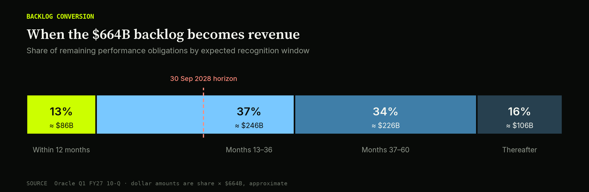
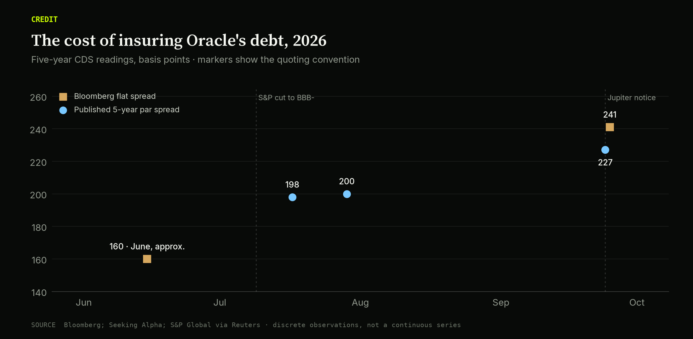
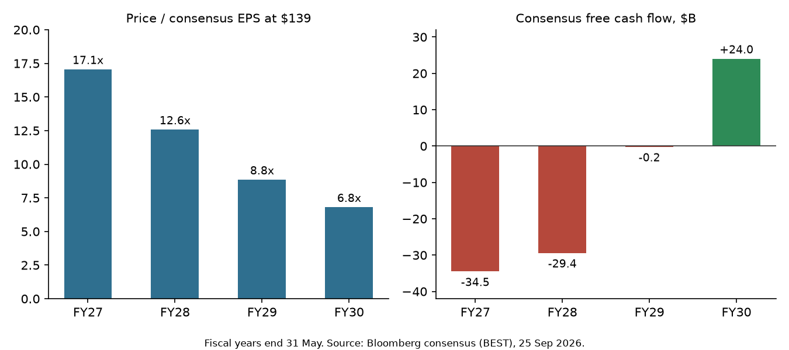
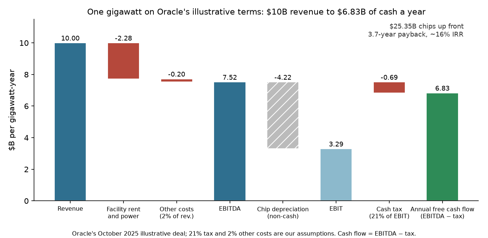
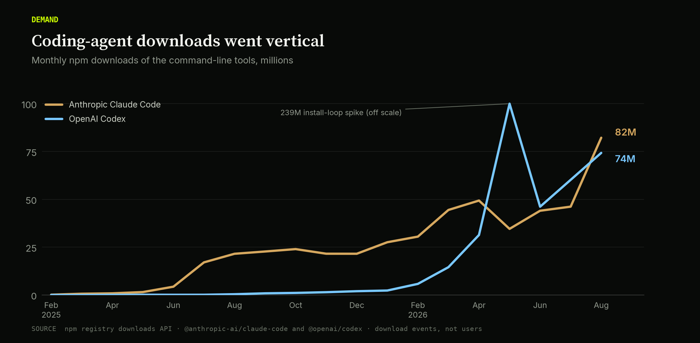
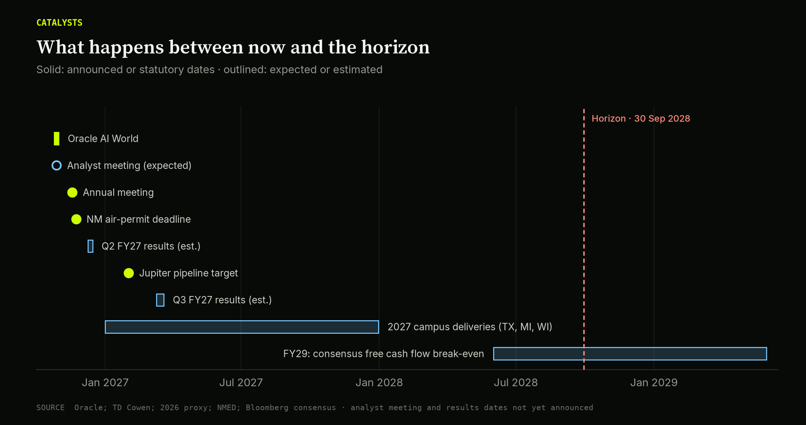
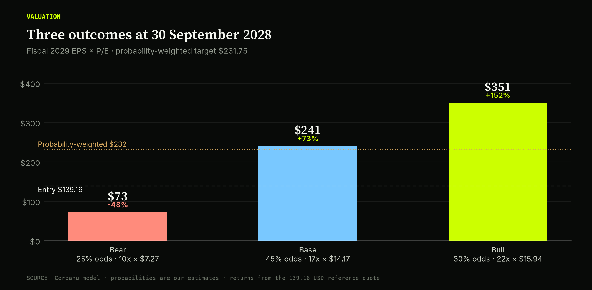

Oracle: the cheapest way to own AI compute
CORBANU · TRADE NOTE · 27 SEPTEMBER 2026
The trade
LONG ORCLon, the Ondo tokenized Oracle share, held spot on Felix, against a reference quote of 139.16 USD observed at 2026-09-26T23:10:53Z (a reference price, not an executed fill), for a horizon to 2028-09-30. Oracle trades at 8.8x the Street's fiscal 2029 earnings. After September's credit scare, the market is pricing the capex and debt and giving less weight to the contracted backlog those outlays are building. The catalysts are OpenAI's next funding round, the December 2026 and March 2027 quarterly results and the New Mexico permit decisions. The thesis fails if OpenAI cannot fund its commitment, if backlog conversion slips, or if Oracle has to sell stock at these prices.
The probability-weighted target is $231.75 by 2028-09-30, a price return of +66.5%. That figure is the average of three scenario targets, weighted by probability: bear $72.73, base $240.83 and bull $350.65. The valuation chart shows all three.
LONG ORCLon · Felix (Ondo spot) · reference quote 139.16 USD · as of 2026-09-26T23:10:53Z · horizon 2028-09-30 · unlevered spot, no funding.
Sizing: 2.52% of capital, unlevered spot, part of our vol-weighted book: 5.0% short Apple (Apple short), 1.33% long SK hynix (SK hynix long) and 2.52% long Oracle (Oracle long). Each position carries the same risk: 5.0% of capital × Apple's 28.5% 63-day volatility = 1.43% of capital in annualized volatility, and each size is 1.43% divided by that instrument's own 63-day volatility (SK hynix 107.2%, Oracle 56.5%; Hyperliquid daily closes, 30 June–25 September 2026). There is no market-beta hedge: Apple's 63-day correlation to the Nasdaq-100 is currently negative, so a beta-based hedge ratio is unstable. Gross exposure across the three positions is 8.85% of capital, with book volatility of about 3.4% of capital. Sizing data
The exposure
Oracle has three businesses.
- Database and licences. Oracle's oldest business is its database and support contracts. It is mature, and licence revenue is shrinking as customers move to the cloud.
- Cloud applications. Fusion for finance and HR, NetSuite and industry software. This business is growing at about 10% a year.
- Oracle Cloud Infrastructure (OCI). Oracle buys GPUs and CPUs and installs them in data centres it leases from developers such as Blue Owl's STACK, Vantage and Crusoe. It then rents that capacity to AI labs and enterprises on multi-year contracts. This business is why the stock trades like an AI name.
OCI revenue was $7.4B in the quarter to 31 August 2026, up 121% (Oracle Q1 FY27 results). Of that, the CPU-and-GPU line contributed $6.5B, up 151% (Q1 FY27 earnings slides).
Under take-or-pay terms, customers pay for AI capacity for five to six years whether they use it or not. Oracle pays for the chips up front and leases the buildings. It had $288B of leases that had not yet started at quarter end, with terms of 15 to 19 years, beginning between now and fiscal 2029 (Q1 FY27 10-Q). The cash goes out before any revenue comes in, because revenue starts only when a site goes live. That is why free cash flow is deeply negative during the build.
Remaining performance obligations (RPO) are contracted revenue that Oracle has yet to recognise. RPO stood at $664B at quarter end, about 1.6 times Oracle's market value of roughly $421B at the reference price. The 10-Q gives the schedule: about 13% is expected to be recognised within twelve months, 37% in months 13 to 36, 34% in months 37 to 60 and the remainder after that. Shareholders gain if this backlog turns into earnings faster than depreciation, interest and new share issuance eat into it.

Most of Oracle's contracted backlog is scheduled to turn into revenue between one and five years out. Source: Oracle Q1 FY27 10-Q; dollar values are approximate.
The trade holds Oracle through ORCLon, a token backed one-for-one by Oracle shares that reinvests the dividend, so it tracks the listed share's total return without leverage or funding costs. Unlike the NYSE share, it carries no vote and depends on the issuer's custody; the appendix covers those differences.
Why now
In September, Oracle sent two signals in opposite directions, and the stock followed the more worrying one.
- Operations strengthened. On 10 September Oracle reported revenue of $19.3B, up 30%, and adjusted EPS of $1.92 against about $1.74 expected. It raised full-year guidance to at least $90B of revenue and $8.10 of EPS (Oracle Q1 FY27 results; CNBC).
- Credit deteriorated. A five-year credit default swap (CDS) is the annual cost of insuring a company's debt against default. Oracle's traded near 241 basis points on Bloomberg's flat-spread quote on 25 September, against about 53 for Microsoft and about 100 for Meta (Bloomberg). Published market reports put the record on the standard quoting convention at 227bp that week (Seeking Alpha via TradingView). On 24 September Oracle sent a force-majeure notice on its New Mexico campus, and the stock fell 3.5% (CNBC).

Oracle's five-year CDS in 2026, from published reports and Bloomberg. Markers show quoting basis; the points are observations, not a continuous series.
At today's price, each later year of earnings is priced at a lower multiple. Bloomberg consensus, dated 25 September, has EPS of $8.16 for the year to May 2027, $11.07 for fiscal 2028, $15.73 for fiscal 2029 and $20.46 for fiscal 2030. At the 139.16 reference quote, that is 17.1x this year, 12.6x next year, 8.8x fiscal 2029 and 6.8x fiscal 2030. The 50 analysts Bloomberg tracks have an average target of $240. On 9 September, at $162.52, Oracle traded at about 21x forward earnings, against 27x for Microsoft and 36x for Amazon (Yahoo Finance). Since then the stock has fallen about 15% while earnings guidance has gone up.
Against enterprise software and the other clouds, Oracle is the cheapest grower. Apart from the much smaller CoreWeave, it has the fastest consensus revenue growth in the table and the lowest multiple on next year's earnings. Its price-to-earnings-to-growth ratio (PEG) is about a third of the hyperscalers'.
| Company | Market cap | Revenue growth, next FY | EPS growth, year after | P/E, next FY | EV/EBITDA, next FY | PEG |
|---|---|---|---|---|---|---|
| Oracle | $416B | 45% | 42% | 12.4x | 7.5x | 0.29 |
| Microsoft | $3,833B | 19% | 22% | 21.9x | 13.0x | 1.02 |
| Amazon | $2,693B | 15% | 25% | 20.1x | 9.5x | 0.79 |
| Alphabet | $4,189B | 26% | 23% | 21.5x | 13.9x | 0.95 |
| CoreWeave | $49B | 106% | n/m | n/m | 7.0x | n/m |
| SAP | $259B | 12% | 19% | 22.0x | 14.4x | 1.13 |
| Salesforce | $193B | 10% | 15% | 14.6x | 10.0x | 0.95 |
| IBM | $212B | 4% | 8% | 17.2x | 12.2x | 2.09 |
| MongoDB | $33B | 18% | 22% | 52.6x | 36.7x | 2.41 |
| ServiceNow | $140B | 19% | 21% | 27.0x | 17.8x | 1.27 |
| Hyperscaler average (Microsoft, Amazon, Alphabet) | 20% | 23% | 21.2x | 12.2x | 0.92 | |
| Software average (SAP, Salesforce, IBM, MongoDB, ServiceNow) | 12% | 17% | 26.7x | 18.2x | 1.57 | |
| Peer median (all eight, excluding CoreWeave) | 16% | 21% | 21.7x | 13.5x | 1.07 |
Bloomberg BEST consensus and closing prices, 25 September 2026. Each company's own fiscal years: Oracle's next fiscal year ends May 2028, Microsoft's June 2028, Salesforce's and MongoDB's January 2028, the rest December 2027. PEG is next-year P/E divided by the following year's EPS growth. EV/EBITDA is enterprise value over next-year consensus EBITDA, so it counts Oracle's debt. CoreWeave has no positive EPS until its third year.
Against the peer median, Oracle is growing revenue nearly three times as fast (45% against 16%) and EPS twice as fast (42% against 21%), yet it trades at 12.4x next year's earnings against 21.7x, a PEG of 0.29 against 1.07. The discount survives Oracle's debt: at 7.5x next year's EBITDA against a peer median of 13.5x, it is priced in line with the far smaller CoreWeave.
Four months ago, the stock stood at our base-case target. Oracle shares rose about 40% in May as OpenAI raised new money and said it was on track to meet its revenue targets (Motley Fool). The shares peaked at $248.15 in early June. To compare that peak with today, the table uses the 10 June and 10 September earnings calls alongside Bloomberg consensus:
| June | Now | |
|---|---|---|
| Share price | $248.15 (early-June peak) | $137.10 (25 Sep close) |
| Consensus EPS FY28 / FY29 | $10.78 / $15.62 | $11.07 / $15.73 |
| P/E on FY29 EPS | 15.9x | 8.7x |
| Consensus target price | $245 | $240 |
| Remaining performance obligations | $553B at the peak; $638B reported 10 June | $664B |
| GPU utilisation | 97.5% | 97.9% |
| FY27 EPS guidance | $8.05 (10 June) | $8.10 |
| Credit rating (S&P) | BBB | BBB- |
| Five-year CDS (Bloomberg) | ~160bp | ~241bp |
Consensus, target and CDS figures are Bloomberg data supplied by the author; published CDS reports use a different quoting convention and are discussed above.
The operating numbers are flat or better. Consensus EPS is higher even after the at-the-market sale of 141M new shares, about 5% of the company (Q1 FY27 10-Q). The financing picture has worsened:
- The June plan. Oracle announced a $40B debt-and-equity plan on 10 June, and the stock fell 8% to 12% the next day, depending on the report and the time of measurement (CNBC; Reuters via Yahoo Finance).
- The downgrade. S&P cut Oracle to BBB- in July (heise).
- Capex and Jupiter. Gross capex guidance rose to $90–95B, and there was the force-majeure notice.
These are real costs. Even so, the price has fallen 45% while the earnings the market is pricing have not.
Customers fund a large share of the build, and the rest can be financed. Last quarter Oracle received $11.4B of customer prepayments, about 40% of the $28.5B it spent on capex (Q1 FY27 10-Q). For the full year, gross capex is guided at $90–95B, with net cash spending of about $70B after $20–25B of prepayments (CNBC). Oracle signed more than $30B of AI contracts in the quarter and said they have "no incremental impact" on its capital-raising plans (Oracle Q1 FY27 results). CFO Hilary Maxson says each project, once ramped, converts "something like 100%" of post-tax EBITDA into free cash flow, because the chips are bought once (Q1 FY27 earnings call transcript). She did not give a date for company-wide free cash flow to turn positive.
The rest of the gap can be counted. From September 2026 to the end of fiscal 2029, the cash Oracle needs and what it already has look like this (balance-sheet and cash-flow items from the Q1 FY27 10-Q):
| Uses, 1 Sep 2026 to 31 May 2029 | $B |
|---|---|
| Consensus free cash flow deficit (rest of FY27, FY28, FY29) | 58.7 |
| Dividends at last quarter's $1.57B a quarter | 17.2 |
| Debt due within twelve months | 7.6 |
| Total uses | 83.5 |
| Sources | |
| Cash at 31 August, which already includes the $19.9B at-the-market sale | 36.4 |
| Rest of the fiscal 2027 plan: $40B of debt and equity less the $20B sale already done | 20.0 |
| Remaining need, before any minimum cash balance | 27.1 |
The free-cash-flow line takes Bloomberg's fiscal 2027 consensus of −$34.5B less the −$5.4B already spent in the first quarter. The base case covers the remaining need: its share count rises from 3.02B to 3.12B, and 100M new shares at around $170 would raise about $17B, leaving roughly $10B of new debt. Debt maturing after the next twelve months would be refinanced on top of that. The fiscal 2027 plan is from the 10 June call (CNBC).

At entry, price is divided by Bloomberg consensus EPS and by consensus free cash flow, using the fiscal year ending 31 May.
Free cash flow explains the gap. Consensus has it at −$34.5B this year and −$29.4B next year, reaching about zero in fiscal 2029 and +$24B in fiscal 2030. Until that turn, the market prices Oracle as a borrower under stress. The two-year horizon runs up to the change: once free cash flow stops being negative, the stock should be valued on its earnings.
The capex economics are attractive. At Oracle's October 2025 analyst meeting, co-CEO Clay Magouyrk set out a one-gigawatt example:
- a six-year contract at $10B a year, or $60B in total;
- about $39B of cost, split roughly 35% for land, building and power and 65% for compute;
- a 35% gross margin (Longbridge summary of the meeting; Investing.com analysis).
Oracle guided AI-infrastructure gross margins of 30–40% at the same meeting (CreditSights). The cash arithmetic below adds two assumptions of our own, a 21% tax rate and other costs of 2% of revenue:
- Operating profit before depreciation. Revenue of $10.0B, less $2.28B for building rent and power and $0.2B of other costs, leaves operating profit before depreciation of $7.52B a year.
- Tax. Straight-line depreciation on the chips of $4.225B a year brings taxable profit to $3.3B and tax to $0.69B.
- Cash. Cash comes to $6.83B a year over the contract, with no further capex.

One gigawatt of AI capacity on Oracle's illustrative terms, with our tax and cost assumptions. Values in $B per year.
Six years at $6.83B a year on $25.35B of up-front chip spending gives a 3.7-year payback and an unlevered return of about 16%. Revenue has to stay above about $8.6B per gigawatt-year to clear a 9.5% cost of capital; the undiscounted cash break-even is about $6.7B.
The lease term creates the main uncertainty. Building leases run 15 to 19 years, so each gigawatt needs a new tenant or a renewal when its first contract ends, and the renewal price decides whether the return holds. OpenAI's contract gives a better benchmark: $300B over five years for about 4.5GW works out to roughly $13.3B per gigawatt-year (Yahoo Finance).
Utilisation last quarter was 97.9%. GPUs coming off contract, most of them at least four years old, were renewed or resold at a 20% premium (Q1 FY27 earnings call transcript). The chips keep earning after their first contract: hardware that bears write off after one lease is going back out at a higher price.
Demand still exceeds supply.
- Old chips still rent well. In September the median on-demand price for an H100, launched in 2022, is $3.25 an hour, and for the 2020-vintage A100 it is $1.76 (AIMultiple GPU index). Older chips still earn: CoreWeave has A100s contracted out to 2029, according to Thunder Compute's market review.
- Coding-agent downloads have surged. OpenAI's Codex and Anthropic's Claude Code were downloaded 156M times from the npm registry in August 2026, up from 22M a year earlier (npm registry). The registry counts download events, not distinct users, but the increase is clear.
- The labs ration usage while buying capacity. At current prices they are rationing: Anthropic cut Claude Code's weekly limits by 17% on 14 September (Data Gravity). They are also buying capacity wherever they can find it, as Anthropic's $11.6B, seven-year agreement with Akamai on 24 September shows (Akamai).
- The build is still small next to the economy. Blackstone, whose QTS and AirTrunk platforms make it one of the largest data-centre owners, gave the build some context. At the Barclays conference on 15 September 2026, its chief financial officer put AI investment at "less than 1% of GDP," according to a transcript of the session. Past build-outs, from railroads to the dot-com era, ran at 2–5%.

Monthly npm downloads of the two coding-agent command-line tools. Codex's May 2026 figure of 239M was an install-loop spike and is drawn off scale. Source: npm registry.
Customers can pay.
- Anthropic told investors its gross margin exceeds 80% before partner revenue share and training costs, and that it expects a second straight quarter of adjusted operating profit, according to the Financial Times as reported by Reuters. Reuters could not independently verify the report.
- OpenAI's annualized revenue passed $40B in August, about double its end-2025 run rate, helped by Codex (Bloomberg).
Is this a leveraged long on OpenAI? Partly, and the price already charges for it. OpenAI's $300B contract is roughly half of Oracle's backlog. At about $60B a year it is larger than OpenAI's current revenue, so fundraising covers the gap, and OpenAI's access to capital is the biggest single input to this trade. Three things make that exposure better than the credit market is pricing:
- The money is there now. OpenAI closed $122B at an $852B valuation in March (OpenAI) and let employees sell about $7B of stock at the same price in August (Traders Union). On 15 September Reuters, citing the Financial Times, reported early talks on a round at about $1.2T, 41% above March, and said investors had approached OpenAI rather than the reverse (Reuters). CNBC reported the next day that formal fundraising had not begun.
- Markets expect OpenAI's value to rise, not fall. On Polymarket, which settles on Nasdaq Private Market prices, traders put 89% odds on OpenAI's valuation reaching $1T by 31 December and 60% on $1.25T, against 13.5% on a fall to $800B (Polymarket). Variational's OpenAI perpetual marks at 1,577, which on the per-$1B convention these contracts use implies about $1.6T (Variational; CoinGecko). Both are thin: Polymarket's market has traded about $1.2M in total and the perpetual about $0.25M a day. Neither lets anyone buy OpenAI shares, and pre-IPO perpetuals have run persistently above round prices. They show the direction of sentiment, not a price.
- The capacity can be re-let. Utilisation is 97.9%, and GPUs coming off contract are re-renting at a premium. If OpenAI cut its ramp, Oracle would be re-leasing capacity into that market at a lower price, not holding empty buildings.
The bear case already assumes half of OpenAI's ramp never arrives and gives it 25%. The price does not credit the other side: a closed round at $1.2T or more would be the most direct fix for the risk S&P named when it cut Oracle to BBB-. The last time OpenAI raised money, in May, Oracle's shares rose about 40%.
Oracle is protecting its position as tenant, and the landlord says nothing has changed. Bloomberg first reported the force-majeure notice on Project Jupiter, a 2.45GW Stargate campus in Doña Ana County, New Mexico. The notice keeps open Oracle's right to delay rent if the campus misses its 2028 online date. Blue Owl and its STACK platform are the developer and landlord. A person familiar with the matter said the notice is not a default under the project financing. About $18B of project loans were quoted at 89–91 cents on the dollar afterwards, according to the Financial Times.
The dispute is about on-site power. The State Land Office has twice refused the gas pipeline's route across state trust land (Albuquerque Journal), pushing the pipeline target to 1 February 2027. Oracle says Jupiter "remains on our planned schedule," and Blue Owl says the notice "does not change the financial commitments" (TechCrunch). On 17 September the New Mexico Supreme Court unanimously lifted the stays that had frozen the air-permit hearing, although the state environment department still has to appoint a new hearing officer (KRWG). Oracle has also said the campus could fall back on grid power if the air permit fails (Organ Mountain News). Management said on 10 September that Jupiter does not affect this year's guidance.
Jupiter is part of Stargate, the programme launched at the White House in January 2025, so Washington has every reason to see its permits cleared. No federal backstop has been promised, and the valuation gives the political support no value.
The chairman is not selling. A day after the 10-Q disclosed his trading plan for up to 50M shares, worth about $7B at the reference price, Larry Ellison cancelled it. The filing says no stock was sold under the plan and that he "has no other plans to sell any of his Oracle stock" (Oracle 8-K).
Catalyst calendar
28 October is the key date for the shares. Oracle AI World runs from 25 to 28 October at the Venetian in Las Vegas (Oracle). TD Cowen expects a financial analyst meeting on 28 October with updated fiscal 2030 targets (Yahoo Finance). Oracle has not announced that date.
At last year's meeting, on 16 October 2025, Oracle set fiscal 2030 targets of $225B of revenue and $21 of EPS, about 13% above consensus (TIKR). Magouyrk said seven deals with four customers, all of them other than OpenAI and including Meta, had brought in $65B in 30 days. The stock still fell the most in almost nine months the next day, about 7% (Bloomberg). Targets alone did not satisfy the market then. This time it wants a funding plan.
| Item | Bull reading | Bear reading |
|---|---|---|
| FY30 targets | $225B / $21 held or raised | EPS cut, even if revenue rises |
| Funding | Free-cash-flow path, equity cap | Open-ended equity, no path |
| Customers | Non-OpenAI backlog disclosed | OpenAI share of backlog rises |
| AI infra margin | 30–40% reaffirmed | Range lowered |
| Delivery | Gigawatt guide for FY27–28 | Jupiter slips further |
The base case expects the targets to be held and a partial funding path to be set out. Credit, not the first day's share move, is the better test. On Bloomberg's measure, confirmation would be five-year CDS moving from about 241bp back toward the ~160bp of June.

Announced dates and estimated windows between now and the 30 September 2028 horizon. Hollow markers are unconfirmed.
Meta is the customer that matters most for reducing Oracle's dependence on OpenAI. Meta's Muse agent launched on 8 September, reached No. 1 on the US App Store on 18 September and has held the spot since (TechCrunch). Meta says Muse isolates each user's work in a dedicated virtual machine (Implicator). An agent that runs a machine per user creates demand for general-purpose compute, which Oracle sells alongside GPUs. Reuters has seen an internal memo in which Meta plans to double its computing capacity to 14GW in 2027 (Reuters via Investing.com). Oracle confirmed a Meta cloud deal in October 2025, with reports putting its value at about $20B (CNBC). A disclosed Meta expansion would do more than anything else to reduce reliance on OpenAI, and none has been reported yet.
Dates and what each will show:
- 25–28 October 2026: AI World, with the analyst meeting expected on 28 October. The table above sets out what to watch.
- Late October 2026: Meta, Microsoft, Alphabet and Amazon results. Meta's 2027 capex guidance, and any comment on renting outside capacity, will show how much of the build Oracle can win.
- 18 November 2026: Oracle's annual meeting, held virtually (2026 proxy statement). Shareholder questions give management a platform to update the funding plan.
- 23 November 2026: New Mexico air-permit deadline for Jupiter's fuel cells (TechCrunch). The stays have been lifted, but the hearing officer has not been named, so the date may move. Approval would settle the on-site power question and ease the force-majeure overhang.
- About 9–14 December 2026 (estimated; Oracle has not set the date): Q2 FY27 results. Cloud growth against the 65–71% guidance, RPO against $664B, net capex against the $70B ceiling and the first Vera Rubin deliveries will show whether October's promises hold.
- Any time, most likely before year-end: OpenAI's funding round. This is the second re-rating catalyst after the analyst meeting. Polymarket puts 60% odds on a $1.25T mark by 31 December. A closed round at or above the reported $1.2T would reduce the risk S&P cited when it cut Oracle to BBB-, since OpenAI accounts for about half of the backlog (heise). An IPO filing in 2027 would add audited disclosure of OpenAI's ability to pay.
- 1 February 2027: Jupiter pipeline target date. Delivery on time would ease the delay concern; another slip would prolong it.
- About mid-March 2027 (estimated): Q3 FY27 results.
- Calendar 2027: new campuses deliver. Shackelford County, Texas, begins customer delivery in the first half, followed by Michigan and Wisconsin in the second half. The 37% RPO tranche also starts converting in its first year.
- Fiscal 2029 (June 2028 to May 2029): consensus free cash flow reaches break-even. The horizon rests on that shift.
Fundamental invalidation
The mechanism holds only while contracted backlog turns into earnings faster than depreciation, interest and dilution drain them. Research points to five observable developments that would break it:
- OpenAI renegotiates or cannot fund its $300B commitment, a contract that makes up close to half the backlog.
- RPO conversion slips. A drop in the share of RPO due within twelve months below the current 13%, or revenue growth falling short of guidance while RPO keeps rising (Q1 FY27 10-Q), would show that sites are coming online late. A fall in total RPO on its own proves less, since recognising revenue also reduces it.
- Net capex runs well above the $70B ceiling without matching prepayments. That would mean customers have stopped funding the build.
- Renewal pricing rolls over. If GPUs coming off contract re-let at a discount rather than today's 20% premium, both the per-gigawatt return and the six-year depreciation life are wrong.
- Equity is forced at these prices. A cut below investment grade could force a repeat of the $20B at-the-market sale (141M shares in one quarter), handing the recovery to new shareholders.
When to add
These business developments would confirm the mechanism:
- Q2 FY27 cloud growth lands within the 65–71% guidance, with RPO flat or higher.
- Net capex stays at or below $70B, with gross capex held at $90–95B.
- A second quarter of renewal premiums on GPUs coming off contract.
- Credit steadies. CDS falls from the ~241bp Bloomberg level, and there is no further rating action after July's cut to BBB-.
On valuation, extra exposure stays attractive on the model while the stock trades below about 12x base-case fiscal 2029 EPS, roughly $170. At that price more than 40% would remain to the $240.83 base-case target. A rally that comes without these confirmations would not meet the test.
Valuation and model
Fiscal 2029 runs from June 2028 to May 2029, and it is the year consensus free cash flow reaches zero. At the September 2028 horizon, the market will be pricing that year. The model therefore sets the price in two years as fiscal 2029 non-GAAP EPS multiplied by a P/E multiple. The consensus inputs are Bloomberg BEST figures dated 25 September 2026.
| Scenario | FY29 revenue | Net margin | Shares | EPS | P/E | Price |
|---|---|---|---|---|---|---|
| Bear | $120B | 20% | 3.30B | $7.27 | 10x | $72.73 |
| Base | $170B | 26% | 3.12B | $14.17 | 17x | $240.83 |
| Bull | $183B | 27% | 3.10B | $15.94 | 22x | $350.65 |
For reference, fiscal 2026 revenue was $67.4B and non-GAAP EPS $7.63. Fiscal 2027 guidance is at least $90B and $8.10.
How each input is set:
- Base revenue, $170B. Management's own OCI plan puts fiscal 2029 OCI revenue at $114B (Oracle, September 2025). Oracle raised the fiscal 2030 end-point of that plan from $144B to $166B at its October 2025 analyst meeting, so $114B is a conservative anchor. Adding roughly flat revenue from the rest of the company gives about $56B, against about $58B implied for this year. The base sits 7% below the $183B Bloomberg consensus.
- Margin, 26%. Consensus fiscal 2029 figures imply a net margin of about 26.6%, after depreciation on the new fleet and interest on the debt. Interest expense was $1.4B last quarter, up 55% on a year earlier (Q1 FY27 10-Q).
- Base multiple, 17x. This is the stock's current multiple on this year's earnings (17.1x), and below the 21x Oracle commanded two weeks before the reference date. Applying it to fiscal 2029 EPS assumes the market pays the same multiple for those earnings once free cash flow turns. Today it pays 8.8x for them, and closing that gap is the trade. The sensitivity table below shows the target at lower multiples and higher bear odds.
- Bull, consensus numbers at 22x. That is below the 27x the market paid for Microsoft in September (Yahoo Finance).
- Bear, OpenAI resets. OpenAI renegotiates and half its ramp never arrives. Fiscal 2029 revenue reaches $120B, below what consensus already expects for fiscal 2028, and the build stalls. Idle depreciation and interest cut the margin to 20%. A forced equity raise near the lows lifts the share count to 3.30B. At 10x, the shares are worth $72.73, about half today's price.
Dilution and credit. Today's 3.02B share count already includes the 141M shares sold last quarter. The mandatory convertible preferred adds about 25–31M shares in January 2029, after the horizon. S&P has rated Oracle BBB- since the July downgrade. At quarter end, Oracle's $125B of senior notes had a fair value of $105.7B, about 85% of face (Q1 FY27 10-Q). The equity case needs credit to stabilise, not to recover fully, and each scenario's multiple follows that path.
The model gives no value to the tax shield, so any benefit is extra upside. The One Big Beautiful Bill Act permanently restored 100% bonus depreciation for equipment acquired after 19 January 2025 (BDO). In the one-gigawatt example, that lifts the return from about 16% to between 18% and 19.5%, depending on when the deduction is taken. Oracle's filings do not show it yet. Last quarter's deferred-tax line was only −$73M, income taxes payable rose $546M, and the effective tax rate was 15.1% (Q1 FY27 10-Q).
Sensitivity. The probability-weighted target across bear weights and base-case multiples, with the other two weights scaled in proportion and returns from the 139.16 reference:
| Bear weight | Base at 13x | Base at 15x | Base at 17x |
|---|---|---|---|
| 25% | $206 (+48%) | $219 (+57%) | $232 (+67%) |
| 35% | $188 (+35%) | $199 (+43%) | $211 (+51%) |
| 45% | $171 (+23%) | $180 (+29%) | $189 (+36%) |
Even at a 45% bear weight and a 13x base multiple, the weighted target is above the reference price.

Scenario prices at the 2028-09-30 horizon, in US dollars per share, calculated as fiscal 2029 non-GAAP EPS times the scenario P/E. The probabilities are our estimates. The probability-weighted target of $231.75 is the average of the three bars, weighted by probability. Valuation assumptions and calculations.
Scenarios
Each scenario is marked at 30 September 2028, and returns are measured from the 139.16 USD reference quote on price alone. The token's reinvested dividend is currently about 1.4% a year before withholding and comes on top of those returns.
The valuation section sets out each case's inputs; the weights rest on this reasoning. The bear case gets 25% because OpenAI's gap between revenue and compute bill is offset by its closed $122B round and a supplier base that spreads its risk. The base case gets the most weight, 45%, because existing contracts and guidance already cover what it needs. The bull case gets 30% because it also needs the credit market to change its view.
The probabilities are our estimates, with 2028-09-30 as the horizon.
| Scenario | Probability % | Catalyst outcome | Valuation driver | Target price | Trade price return % |
|---|---|---|---|---|---|
| Bear: OpenAI resets, half its ramp never arrives | 25.00 | OpenAI renegotiates; half its ramp never arrives; equity issued near the lows; credit at record wides | FY29 revenue $120B, 20% margin, 3.30B shares: EPS $7.27 at a distressed 10x | 72.73 | (47.74) |
| Base: backlog converts on schedule | 45.00 | RPO converts on schedule; capex inside the $70B net ceiling; credit stabilises | FY29 revenue $170B, 26% margin, 3.12B shares: EPS $14.17 at today's 17x | 240.83 | 73.06 |
| Bull: Street FY29 numbers, credit re-rates | 30.00 | Renewal premiums persist; free cash flow turns on schedule; CDS retraces | FY29 revenue $183B, 27% margin, 3.10B shares: EPS $15.94 at 22x, still below Microsoft | 350.65 | 151.98 |
Probability-weighted target: $231.75. Probability-weighted price return: +66.54%.
Appendix: the ORCLon token
Buying ORCLon spot on Felix gives unlevered exposure with no funding payments. Ondo issues ORCLon one-for-one against Oracle shares held at a US broker-dealer. The token tracks total return: rather than paying out Oracle's dividend, it reinvests it into the token, net of withholding tax (Ondo).
The token is a claim on Ondo Global Markets, a British Virgin Islands issuer. It is not a registered share and carries no voting rights or SIPC cover. Shares held at the US broker-dealer Alpaca back the token 1:1 in a bankruptcy-remote structure checked by independent attestations (MetaMask on Ondo Stocks). Minting and redemption run 24 hours a day, five days a week, and outside US market hours the token can drift from the stock price. The reference quote of 139.16 USD was taken on Saturday 26 September, about 1.5% above Oracle's $137.10 close on Friday 25 September. Felix charges a trading fee on each side.
Sources
- Oracle Q1 FY27 10-Q
- Oracle Q1 FY27 results release
- Oracle Q1 FY27 earnings call transcript
- Oracle Q1 FY27 slides
- Oracle FY26 Q1 release with the OCI plan
- Ellison cancels share sale plan (8-K)
- Oracle 2026 proxy statement and annual meeting date
- Oracle calendar-2026 financing plan
- CNBC on Q1 results
- CNBC on the June capital raise
- Reuters on the June share fall
- heise on the S&P downgrade
- Seeking Alpha on record Oracle CDS
- CNBC on the force-majeure notice
- TechCrunch on Project Jupiter
- Albuquerque Journal on the pipeline route and court stay
- KRWG on the Supreme Court lifting the stay
- Organ Mountain News on the grid-power fallback
- Oracle's 2025 one-gigawatt example
- CreditSights on the 2025 analyst meeting
- Bloomberg on the 2025 analyst meeting share reaction
- OpenAI–Oracle $300B contract
- OpenAI $122B round
- Reuters/FT on OpenAI's $1.2T round talks
- Bloomberg on OpenAI's $40B revenue run rate
- Traders Union on OpenAI's $7B employee share sale
- Polymarket on OpenAI's year-end valuation
- Variational OpenAI perpetual
- CoinGecko on pre-IPO perpetual pricing
- Bloomberg on OpenAI's next round
- Reuters/FT on Anthropic margins
- Akamai–Anthropic agreement
- TechCrunch on Meta's Muse
- Implicator on Muse's design
- Reuters on Meta's capacity memo
- AIMultiple GPU index
- Thunder Compute on GPU rental markets
- Data Gravity on GPU depreciation
- npm registry download counts
- BDO on OBBBA provisions
- Ondo Stocks product terms
- MetaMask on Ondo Stocks custody and attestations
- Bloomberg consensus estimates (BEST), CDS and ratings, 25 September 2026
- Blackstone at the Barclays Global Financial Services Conference, 15 September 2026 (transcript)
Corbanu · Trade note · 27 September 2026